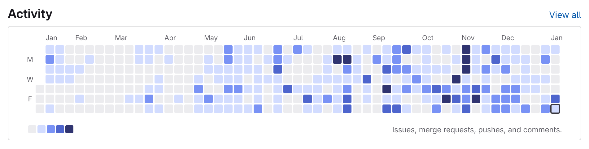

One Year of Inkscape Contributions
It’s that time of the year again, where people post year-end retrospectives and new year resolutions. (Well it had passed but I’m putting this out nonetheless.) Looking through my blog archive, I found out that my last post about Inkscape was posted just over a year ago, so it’s probably time to see how the journey went last year.
Let’s start with my contribution graph, then have a closer look:

The Inkscape Beginner’s Guide
In January, my first blue dot was an issue opened in the Inkscape Website repository. At the time I was trying to translate articles on the site; as I wrote about in last year’s post, the main focus at the time was translations of the website and the interface. I was also running a small team of 3 people that help with the Beginner’s Guide translations, and slowly but surely we translated parts of the guide into Traditional Chinese.
The issue with the guide however, was the outdated information. It became a lot more apparent as we’re translating, when a team member asked whether to update a shortcut description to match the behavior of the current version. After some discussion we decided to keep translating the current version, noting the discrepancies as we do so, and then update the English text after. Sadly after the graduation of team members, progress grinded to a halt, and the manual remains partially translated until this day. My next encounter with the manual will happen later last year.
Opening Issues
The dots for the next few months, apart from the Beginner’s Guide updates, are for the issues I opened in the bugtracker. Inkscape separates the bugtracker into two parts: Inbox, the user-facing bugtracker, and the main tracker where confirmed issues are moved to. The issues I was opening then were mostly feature requests, like this one about the lack of support for touchpad scrolling with number fields, and this one about mesh gradients. They are mostly triaged and labeled by Elendil (going by the handle KrIr17), a prominent contributor of the testing team in Inkscape.
Back in 2023 when I first discovered the Inkscape chatrooms, I decided to join all of them since they’re open to anyone with an account. Last year in May, Adam (handle adam.belis, long-time contibutor) and Elendil was sorting out all the unlabeled issues at an amazing pace (~100 per day), for which they reported their progress in the “Testing” chatroom. I offered some help here and there, testing several issues to see if they were still a problem in the latest version.
Eventually around June, I was given the Reporter role in the bugtrackers, meaning that I can, too, start labelling and moving issues like a real bug triager. That brings us to…
Triaging Issues
(I must say at this point, comparing people’s contribution graphs was loads of fun.)
From that point on I started triaging issues on and off, attempting to give people measured responses to their reports. At first I basically copied Elendil’s way of responding, usually starting with “Thanks for reporting!”, then laying out what info needs to be added and whether the issue can be reproduced. I’m proud to say that I’m still using the exact same format to this day :)
However after some triaging sessions I did in August, I quickly realized that bug triaging, at least for me, is a Sisyphean effort that has no practical end, and that squeezing too much work in one day takes a toll on the next few days, where I don’t even have the strength to open the bugtracker. To make it more sustainable, I started to do the work at a slower pace, triaging around 5–10 issues every time.
This whole time, Elendil, Adam and others on the testing team were very helpful, and always answered questions I had in the chatroom. I feel thankful for the warm interactions and pertinence of people in the community. That’s what gives me the motivation to keep going forward, inside and outside of the project.
Aside from bug triaging, there are other things going on in Inkscape that I happen to be a part of:
The UX Team
Since I was also in the UX team chatroom, I was able to observe what’s going on, and occasionally comment on some discussions. Since I joined, I witnessed a number of proposals that happened, and as of now some of them are either implemented or actively worked on:
- Henrique’s video on Inkscape’s UI was released in July, and since then Mike (mikekov) has worked on the Object Properties dialog proposal and the color selector popup, both of which have working merge requests. The blog LibreArts gave it a try in November, and was excited about the development.
- New Blender-like spinbuttons (number fields), proposed by Adam and implemented by Mike, landed in the master branch (that’s the main branch being worked on).
- New selection cues that looked more like Figma’s was implemented by Ishaan (pulsar17). Here’s a video by Martin interviewing Ishaan on the feature.
- Martin made another video asking users and printing professionals about the supposed UX of the color management workflow.
- Folding button groups was implemented by Vaibhav and Tav.
- A tabbed interface, much like what you’d expect from other design programs like Krita and Illustrator, was implemented by PBS.
Watching all this development unfold in front of me was pretty amazing. I personally engaged in some discussions like the Swatch dialog improvements, and commented on a number of UX issues/merge requests.
The Vectors Team
This is the team that manages official social media accounts and holds events like anniversaries or Inkscape challenges. Since July I helped with the forum posting. Also at the beginning of this year I had my first try in guiding the monthly meeting, where we had a recap on the monthly challenge, discussed about the social media posting policy and so on. It’s quite a new experience since the meetings are text-based, as opposed to in-person meetings or video calls.
Documentation
Let’s end off this section with my work on the Beginner’s Guide. I opened this issue about my proposed arrangement of the Beginner’s Guide in November, and since then, wrote and updated some chapters. The fun part about this is when I get to draw new figures for the chapters, replacing old figures needing an update. I can’t say that about the writing process (which honestly is painful due to English being a second language), but reading through a chapter after an update is still pretty rewarding. My efforts on this will continue in 2025, and I hope that at least when Inkscape 1.5 releases, we’ll have the guide available for it.
I’d like to take the opportunity to thank Elendil, Adam, PBS and Martin for helping when I have problems triaging issues; Maren, Michèle, Lazur, Pacer and Greenfoot5 (the Discord maintainer) for all the discussions we had in the Vectors team; Kaixo, Casper, Mike and Henrique for the substantial work and insights on the UX front; and everyone I interacted with the past year in the chat, on GitLab, Reddit, Discord and all the social media platforms. This may sound corny but it’s true: Without all of you I wouldn’t have the motivation or even the chance of keeping up the contributions.
So, what’s in store for this year? Obviously I’ll try my best with updating the Beginner’s Guide, keep triaging issues, and see if I finally learn enough C++ to actually start fixing bugs. I also have some extension ideas and I’ll try to at least make demos and upload them somewhere. Above all I hope to live on to see myself writing such an article at the end of this year.
Cheers!
– ltlnx 2025-01-11